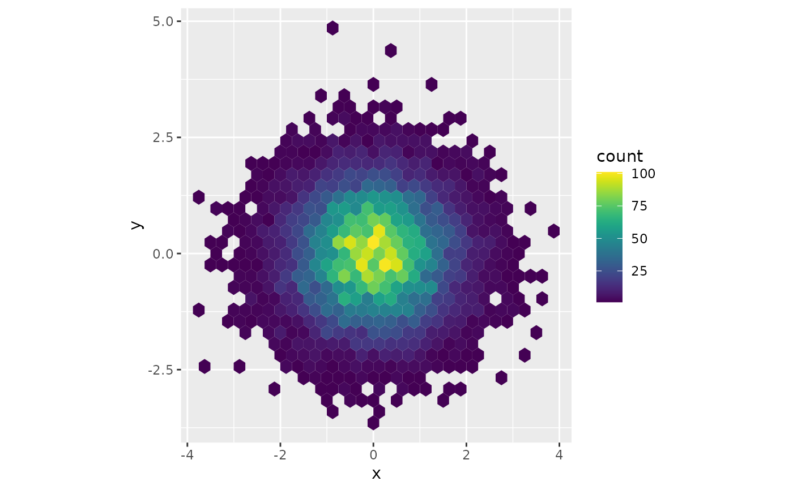

This function creates a vector of n equally spaced colors
along the selected color map.
Usage
viridis(n, alpha = 1, begin = 0, end = 1, direction = 1, option = "D")
viridisMap(n = 256, alpha = 1, begin = 0, end = 1, direction = 1, option = "D")
magma(n, alpha = 1, begin = 0, end = 1, direction = 1)
inferno(n, alpha = 1, begin = 0, end = 1, direction = 1)
plasma(n, alpha = 1, begin = 0, end = 1, direction = 1)
cividis(n, alpha = 1, begin = 0, end = 1, direction = 1)
rocket(n, alpha = 1, begin = 0, end = 1, direction = 1)
mako(n, alpha = 1, begin = 0, end = 1, direction = 1)
turbo(n, alpha = 1, begin = 0, end = 1, direction = 1)Arguments
- n
The number of colors (\(\ge 1\)) to be in the palette.
- alpha
The alpha transparency, a number in [0,1], see argument alpha in
hsv.- begin
The (corrected) hue in [0,1] at which the color map begins.
- end
The (corrected) hue in [0,1] at which the color map ends.
- direction
Sets the order of colors in the scale. If 1, the default, colors are ordered from darkest to lightest. If -1, the order of colors is reversed.
- option
A character string indicating the color map option to use. Eight options are available:
"magma" (or "A")
"inferno" (or "B")
"plasma" (or "C")
"viridis" (or "D")
"cividis" (or "E")
"rocket" (or "F")
"mako" (or "G")
"turbo" (or "H")
Value
viridis returns a character vector, cv, of color hex
codes. This can be used either to create a user-defined color palette for
subsequent graphics by palette(cv), a col = specification in
graphics functions or in par.
viridisMap returns a n lines data frame containing the
red (R), green (G), blue (B) and alpha (alpha)
channels of n equally spaced colors along the selected color map.
n = 256 by default.
Details
Here are the color scales:

magma(), plasma(), inferno(), cividis(),
rocket(), mako(), and turbo() are convenience functions
for the other color map options, which are useful when the scale must be
passed as a function name.
Semi-transparent colors (\(0 < alpha < 1\)) are supported only on some
devices: see rgb.
Author
Simon Garnier: garnier@njit.edu / @sjmgarnier
Examples
library(ggplot2)
library(hexbin)
dat <- data.frame(x = rnorm(10000), y = rnorm(10000))
ggplot(dat, aes(x = x, y = y)) +
geom_hex() + coord_fixed() +
scale_fill_gradientn(colours = viridis(256, option = "D"))

# using code from RColorBrewer to demo the palette
n = 200
image(
1:n, 1, as.matrix(1:n),
col = viridis(n, option = "D"),
xlab = "viridis n", ylab = "", xaxt = "n", yaxt = "n", bty = "n"
)